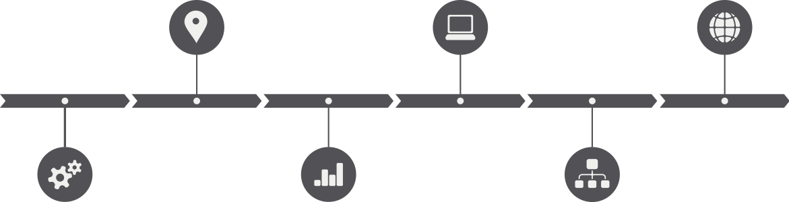

The investment offerings listed on this trading platform are being offered exclusively to persons outside of the United States, and may not be purchased by any US citizen or resident of the US. Any person desiring to invest in the offerings on this site must verify that they are not a US citizen or resident and must provide documentation of nationality and residence. Nationality and residence of all investors will be independently verified and if it is determined that an investor is a US citizen or resident, the investment will be revoked and all money will be refunded to the Investor.
I have been notified
- The first global digital asset that backed by real estate project
- Completion of asset digitization based on real estate
- Entire asset digitization process being public and transparent
- Unique, stable and creative blockchain product
- Development of brand new business model, operation model and sales model
- Establishment of digital asset ecosystem based on blockchain
Watch Video
What isRET?
- RET -- Stands for Real Estate Token,
- is an encrypted digital token that representing the digitized real estate assets,
- generated based on ACChain open source blockchain technology.
Real Estate Developer
Serene Country Homes is an experienced home developer and land management company in Dallas, Texas, it’s managing properties all over north America. Sendera Ranch is Serene Country Homes’ newest project, it is also our digitization project’s underlying asset. The development cycle is divided into 10 phases, 889.53 acres, 2385 houses will be build, and the total value of the project is approximately USD$655mm.
RET Distribution Mechanism & Exit Mechanism
- Distribution Mechanism
- 1.Total Volume：
- 2385 houses will be built, and the value of each house is USD$275,000.0. Thus, the total value of the project is approximately USD$655mm.
- 2.ICO Project:
- According to the total value of real estate project, 655,875,000 tokens will be issued in 2017, each token valued as USD$1. There are 13 phases in total, the first 12 phases will be issued USD$50,000,000.0 amount of RET, while the last phase will be issued USD$55,875,000.0 amount of RET.
- Exit Mechanism
- The number of RET issued for each property is constant.
- 1. RET holders pay for their staying with RET and after the payment occurs, RET payment applies in global digitized real estate community.
- 2. After the establishment of the ecosystem, abundant application scenarios allow RET holders to have multiple options of consumption.
- 3. RET holders can trade RET on exchange platforms ( to exchange RET for other tokens or to sell RET for cash).
- 4. When RET holders have the same amount of RET as the total RET-valued amount of land and houses, the title and property ownership of the houses selected will be transferred to them.
- Completion of Project Due Diligence and Third-party Custody
- Apr 3，2017——Apr 28， 2017
- Start RET Selling
- May, 2017
- End of first phase construction, begin the process of houses redemption
- 2019

- Mar 2017
- Business Application Based on Blockchain
- May 15, 2017
- Start RET Publicity Process
- July 2017
- Start Developer Construction
Project Team
- Dirk Foo
- President and Chief Executive Officer
- Serene Country Home，CEO
- Dirk is the President and Chief Executive Officer of the A2A group of Companies. Concurrently, he oversees A2A’s Asia-wide sales network as Executive Vice President. From humble beginnings and with little more than his Cambridge certificate, Dirk started out by pounding the streets of Singapore in the only field he has ever known, Sales. In 1999, he acquired a real estate company, Multi-Match Pte Ltd, focusing on the property market in Singapore. In 2000, he was offered the sales distribution rights to market undeveloped land in Canada from a then little known international company, Walton.
- Joe F. Attrux
- Chief Operating Officer and Chief Financial Officer
- Serene Country Home， COO， CA (Ontario), CPA (Hong Kong)国际注册会计师
- Joe is the Chief Operating Officer and Chief Financial Officer of A2A Group of Companies, joining the firm in 2014. Joe holds a Master of Business Administration Degree from the Richard Ivey School of Business, University of Western Ontario, Canada. Joe is a Chartered Professional Accountant with the Chartered Professional Accountants of Ontario, Canada and a Certified Public Accountant with the Hong Kong Institute of Certified Public Accountants.
- Allan Lind
- Executive Vice President for Corporate Affairs & Services
- Allan is the Executive Vice President for Corporate Affairs & Services of A2A Capital Management Pte Ltd and a director of all operating companies within the group. He holds a Bachelor’s degree in Business & Marketing from Edith Cowan University and brings over 30 years of experience in corporate fiscal planning and policy, accounting, auditing and marketing practice with global organizations such as BHP Billiton, the world’s largest mining operator and Gillette Industries of Europe.
- Ron Ramirez, P.E.
- Executive Vice President of Engineering and Construction
- Ron will also help Serene Homes management and ownership team evaluate potential sites for land acquisition. Ron came to Serene Homes from Wier & Associates, Inc. with 18 years of tenure, where he operated as Vice-President and Principal for the last 10 years. His duties included Director of Engineering, Treasurer, and he was the risk manager for the firm. Ron supervised design teams that developed plans and specifications for private development and public sector projects. He was responsible for the design, plan production, budget, client contact, billing, and construction administration/observation.

- Rob Snelus
- Executive Vice President of Operations – Sales and Construction
- Rob is a graduate of the University of Texas at Arlington with a B.A. in Communications. Rob has over 25 years of Operations Management experience, not to mention a great wealth of knowledge in the Construction Industry. Prior to joining Serene Homes, he was a Regional Field Operations Manager for Progress Residential. He has also held the positions of Regional Manager and V.P. of Operations with Choice Homes of Texas and KB Home, a top 5 national builder. Collectively, Rob has been involved in the building and selling of over 4000 homes in the Texas over the past 25 years. Rob also oversees the design and costing of the homes for Serene Homes to ensure they are both built to specification and according to the set budget for the particular house model and lot.
Escrow
- Assets evaluation by JLL ( Jones Lang LaSalle, Inc.)
- Market study and analyzation by MetroStudy
- Financial Audit by Weaver LLP;
- Project Planning and designing by Peloton and The Plan Factory
- Collins Barrow as Financial Adviser.
- Third party independent attorney John Worley as legal adviser, Deed registration by Jeff Tasker; In March 20th, 2017, Stewart Title and Bank of American completed the procedure of Deed of Trust.
- MGI [Meiyingju Group(International) Company Limited] has been appointed by Serene Country Homes to perform as the sponsor taking charge of registration and issuing.
- Pencil Blockchain Company Inc. has provided asset digitization service.